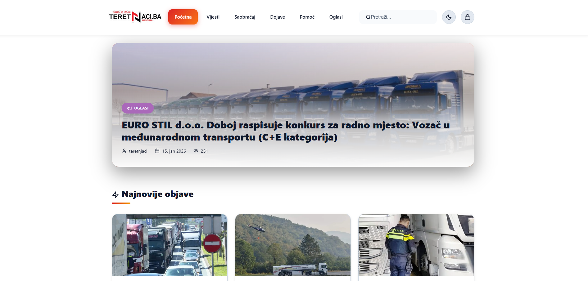

Teretnjaci.ba is a specialized information platform designed specifically for the trucking and transportation industry. Built to provide valuable resources, news, and insights, this platform serves truck drivers, fleet managers, and logistics professionals with up-to-date information about trucks, roads, maintenance, and industry developments. The Teretnjaci.ba ecosystem includes both web and mobile applications, ensuring accessibility across all devices.
>
Key Features:
- Content Management System: Advanced admin panel with full CRUD functionality for creating, editing, and managing articles about trucks, roads, maintenance, and industry news. Supports media uploads, category management, and article scheduling.
- Trucking-Specific Content: Specialized articles covering truck models, specifications, road conditions, assistance services, maintenance tips, regulatory updates, and industry developments tailored specifically for transportation professionals.
- Advanced Search and Filtering: Full-text search functionality across all published content with filtering by categories, publication date, and relevance. Users can easily find specific information about trucks, roads, or maintenance procedures.
- Mobile Applications: Dedicated Android and iOS applications with native mobile experience, push notifications for new articles, offline reading capabilities, and mobile-optimized interface for on-the-road usage.
- Secure Authentication System: Basic authentication with username and password protected by JWT token security. Secure API communication between frontend and backend with protected admin routes and user sessions.
- Analytics and Monitoring: Built-in analytics to track article performance, user engagement metrics, and platform usage. Monitor popular content, user demographics, and reading patterns to optimize content strategy.
- Road Assistance Information: Comprehensive guides and articles about road assistance services, emergency contacts, repair facilities, and troubleshooting tips for common truck issues on the road.
- Maintenance Resources: Detailed maintenance tutorials, preventive care schedules, troubleshooting guides, and best practices for truck maintenance to help drivers keep their vehicles in optimal condition.
Technical Specifications:
- Frontend: React with Vite.js and TypeScript, ensuring fast development cycles and optimal performance. Component-based architecture for scalability and maintainability with responsive design principles.
- Backend: Node.js with Express.js framework providing robust RESTful API architecture for high-performance data exchange and seamless integration with frontend applications.
- API Communication: Axios for asynchronous API calls with built-in error handling, request interceptors, and retry logic. JWT token management for secure authentication across all requests.
- Authentication: Basic authentication with username and password, protected by JWT tokens for session management. Secure password hashing and validation with configurable session timeouts.
- Routing: React Router DOM for intuitive client-side navigation with lazy loading and code splitting to reduce initial load times and improve overall performance.
- Database: MySQL database managed through phpMyAdmin with optimized table structures, indexing for performance, and relational data integrity for content management.
- Hosting Environment: cPanel hosting platform providing reliable web hosting with SSL certificate, email services, and file management through familiar control panel interface.
- Version Control: Git for collaborative development and source code management, ensuring reliable version tracking, branching strategies, and deployment workflows.
- Web Deployment: Traditional web hosting through cPanel with FTP/SFTP deployment, database management via phpMyAdmin, and domain configuration through standard hosting control panel.
- Mobile App Development: React Native framework for cross-platform mobile application development, allowing shared codebase between Android and iOS applications with native performance.
- Security Features: SSL encryption for data in transit, secure password storage with hashing algorithms, input validation and sanitization, and protection against common web vulnerabilities.
- Performance Optimization: Image optimization, code minification, caching strategies, and database query optimization to ensure fast load times and responsive user experience.
Platform Architecture:
- Web Application: Fully responsive React application accessible from any modern web browser. Progressive Web App (PWA) features for app-like experience on mobile devices without installation.
- Android Application: Native Android application built with React Native, available on Google Play Store. Includes push notifications, offline storage, and Android-specific optimizations.
- iOS Application: Native iOS application built with React Native, available on Apple App Store. Designed following iOS Human Interface Guidelines with iOS-specific features and optimizations.
- Admin Panel: Secure administrative interface for content management, user management, analytics viewing, and platform configuration. Role-based access control for different admin privileges.
- Data Synchronization: Real-time data synchronization between web and mobile applications. Offline capabilities in mobile apps with local data storage and background synchronization when online.
How It Works:
- Admin Content Creation: Administrators log into the secure admin panel using basic authentication, create and manage articles organized by categories, upload media files, and schedule publications.
- Web Platform Access: Users visit teretnjaci.ba website, browse articles by category or use search functionality, read detailed content about trucks and roads, and access valuable industry information.
- Mobile App Experience: Users download Android or iOS app, receive push notifications for new articles, read content offline while on the road, and enjoy mobile-optimized interface.
- Notification System: Mobile apps receive push notifications for new articles, important updates, or emergency road information. Web platform shows visual indicators for new content.
- Data Management: All content, user data, and analytics are stored in MySQL database managed through phpMyAdmin, with regular backups and optimization for performance.
- Information Discovery: Users can search for specific truck models, road conditions, maintenance procedures, or regulatory information using advanced search functionality with filters.
- Content Sharing: Articles can be easily shared via social media, email, or messaging apps, helping valuable information reach more professionals in the transportation industry.
- Analytics Review: Administrators can review platform analytics to understand popular content, user engagement patterns, and optimize content strategy based on data-driven insights.